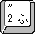
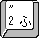

２．はじめてのプログラミング
まず最初に、パソコン上でプログラミングをおこなうために必要な基本的な操作方法について説明します。
キーボード
プログラミングではキーボードでさまざまな文字を入力します。
それぞれの文字の入力方法は以下です。
エディタ
パソコン上で文字（テキスト）のみのファイル（テキストファイルと呼びます）を作成、編集、保存するためのソフトウェアのことです。一般的に、テキストの入力、削除、コピー、貼り付け、検索、置換、整形などの機能を備えています。
プログラムも、このエディタを使って作成します。今回は「Atom」というエディタを使います。
エディタの起動
「スタート」をクリックします

「コンピューター」をダブルクリックします
「リムーバブル ディスク」をダブルクリックします
「Atom」フォルダをダブルクリックします
「atom.exe」をダブルクリックすると、テキストエディタ「Atom」が起動します
テキストファイルの保存
エディタで何か文字を入力した場合は、ファイルとして保存する必要があります。
ファイルの保存は以下の方法でおこないます。
何か文字を入力します

「ファイル」メニューをクリックします

「保存」メニューをクリックします

「ファイル名」を入力して「保存」をクリックします

エクスプローラーで保存されたファイルを確認することができます
コマンドプロンプト
コンピュータに直接命令を出すことができるソフトウェアのことです。
コンピュータに出す命令のことを「コマンド」と呼びます。
プログラムの実行は、このコマンドプロンプトを使っておこないます。
コマンドプロンプトの使い方
「スタート」をクリックします
「コンピューター」をダブルクリックします
「リムーバブル ディスク」をダブルクリックします
「cmd.bat」をダブルクリックすると、コマンドプロンプトが起動します
以下のようにコマンドを入力し、エンターキーを押すとコマンドが実行されます（「help」コマンドは、一般的なコマンドの一覧を表示するコマンドです）
help
最初のプログラム「Hello World」
エディタを使って最初のプログラムを作ってみよう。
プログラムを作成したら、コマンドプロンプトを使って実行してみよう。
エディタを開きます
以下のようにエディタに入力します
『hello.rb』というファイル名でファイルを保存します
コマンドプロンプトを立ち上げます
以下のようにコマンドを入力し、エンターキーを押してコマンドを実行します
ruby hello.rb
コマンドプロンプトに以下のように表示されているか確認しましょう
Hello World
表示されなかったら近くの先生に声をかけてね。


 + 
+ 

 又は
又は 
 又は
又は 
 又は
又は